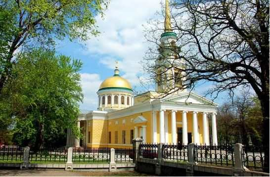

Днепру 245 лет: ТОП-3 местные достопримечательности, которыми стоит
проникнутся тем, кто любит свой город

Во вторую субботу сентября Днепр отмечает 245-летие. За эти годы в нем много чего менялось –
начиная от названия и заканчивая внешним видом.
Это сформировало его особый характер, для познания которого,
достаточно пройтись по историческим достопримечательностям.
Их в нашем городе много, но есть те, которые посетить имеет особый смысл.
Об этом сообщили на пресс-конференции в ИА «Информатор».
Изучая историю Днепра и регулярно проводя экскурсии, в днепровской турфирме с 18-летним стажем выделили три самых популярных и интересных места, которые стоит посетить
местным жителям и гостям города. Каждое из них имеет свою историю, ценность и окутано неповторимым днепровским шармом.
- Панорамный вид Днепра с высоты птичьего полета на 17-м этаже Меноры.
Кроме того, что здание имеет уникальную историю, оно еще и является основной смотровой площадной Днепра. Минора пристроена к столетнему архитектурному достоянию -
дому Пчелкина, который считается тоже уникальным местом.
- Перемещение в ретро-Днепр в "Машине времени".
В стенах музея ретро-автомобилей "Машина времени" воссоздана улица 70-х годов: телефонная будка, автозаправка, парковые лавочки, фонари освещения и прочее.
После занимательной прогулки по старому Днепру, можно прямо там сесть за за столик и выпить чашечку кофе или чего-то другого. - Прогулка по Монастырскому острову и парку Шевченка.
Эту экскурсию можно заказать в турфирме, а можно и пройтись самостоятельно. Ее маршрут включают скопленные в "сердце" Днепра места: Дворец Потемкина;

Преображенский собор, первый камень который заложила царица Екатерина; каменные бабы; таинственный Монастырский остров; казацкая тропинка; водопад Ревущий.